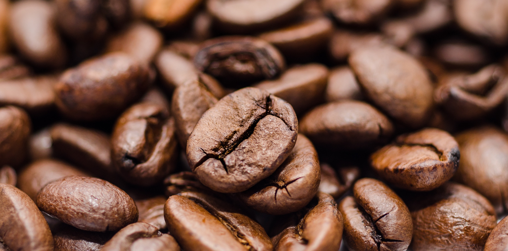

ABOUT OUR ESTATE
After a careful study with regards to the regions climate, topography, soil composition, average rainfall, sunlight exposure, relative humidity and other such factors. It was ascertained that the sort of coffee most suitable under such environmental conditions, was “Arabica Coffee”.
Nuwa Estate is located on the gradient hills North-East of Nepal in the district of Nuwakot and was established in May 2007. Here the Estate spreads over two VDC’s (Village Development Committee) specifically Sundaradevi and Kabilas. Stretching over 25.04 Hectares (+500 Ropani, 1 Hectare = 19.965 Ropani) of cultivable land. At Nuwa Estate we grow 100% Arabica coffee at an altitude of about 1300 – 1400 meters above sea level. Nuwa coffee is “shade grown” under the cover of intermixed fruit trees namely avocados, bananas, hazelnuts and macadamia nuts. These plants act as barriers and help filter the rays of the sun before allowing it to reach the coffee plants. We also employ a “bird friendly” approach at Nuwa Estate and all our coffee beans have been subjugated to wet processing for quality enhancement.

Nuwa Estate coffee beans have a feedback of being more passionately flavored with tones of sugar, fruits and berries. These coffee beans are unrivaled in their intense flavor and aroma, all of which can be credited to its prestigious location, agricultural planning, specialized labour and the diverse florae and fauna growing around the coffee plants. The coffee beans are naturally cultivated and processed through “organic” production and processing technology in Sundaradevi and Kabilas respectively. With a systematic collection and supply system to guarantee the quality of the product, we are able to consistently and reliably provide a steady stream of superior highland specialty coffee.
At Nuwa Estate we have embedded more than 70,000 coffee plants, all of which were nurtured in our very own nursery. This way we are certain that what we reap is what we sow
Our coffee is hand picked by a host of workers who are specialized in distinguishing between cherries that are ripe for the picking and those that have still yet to mature. To be certain of our yield, the cherries are re-inspected for defects or green beans and then put through a “flotation” process. Whereby we are able to separate immature, dried and overripe cherries (which will float) from the better quality ripe berries (which sink). The floaters are pulped separately. Cherries are processed as soon as possible on harvesting to avoid deterioration of the beans.
On completion of these steps we then remove the outer skin of the cherry and the pulpy flesh beneath it. This flesh and the fruit skin are collectively called the pulp after their removal in a process called “pulping” the mucilaginous layer is then separated by “fermentation.” The coffee beans are then pre-dried to remove surface water, when dried and ready for milling the coffee beans are referred to as Parchment Coffee. Beneath the parchment skin and covering there is a thin membrane called the silver skin, in order to remove this layer the beans are put though the “hulling” process, subsequently they are then titled as Green Coffee. Green Coffee or Green Beans are then stored in cool and dry conditioned warehouses where the temperature and humidity is observed, so as to preserve the quality of the beans and meet the export standards.